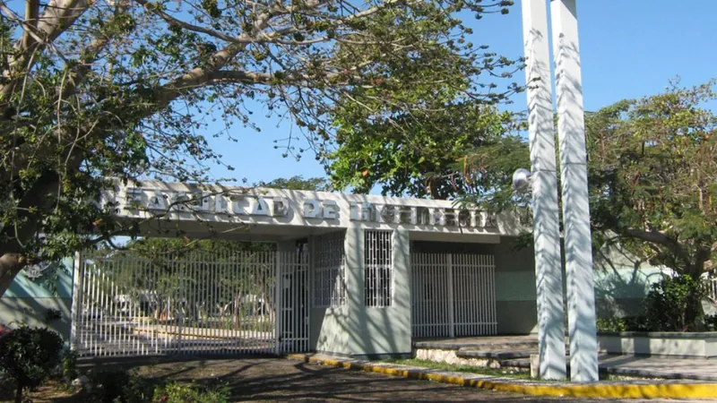
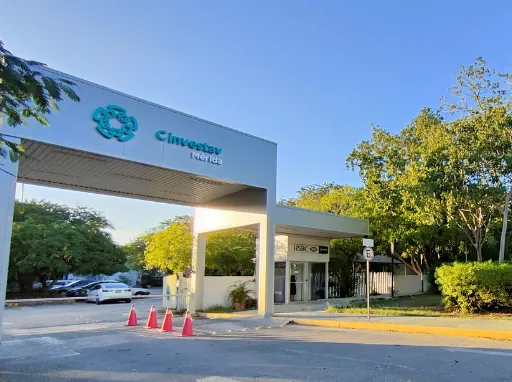
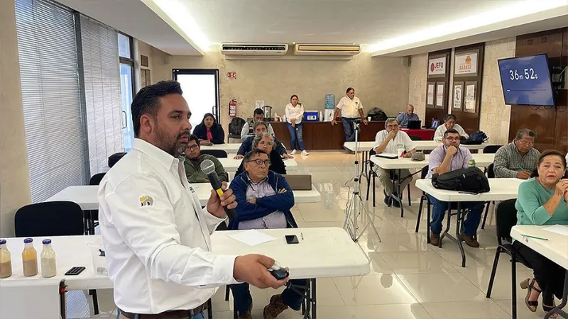
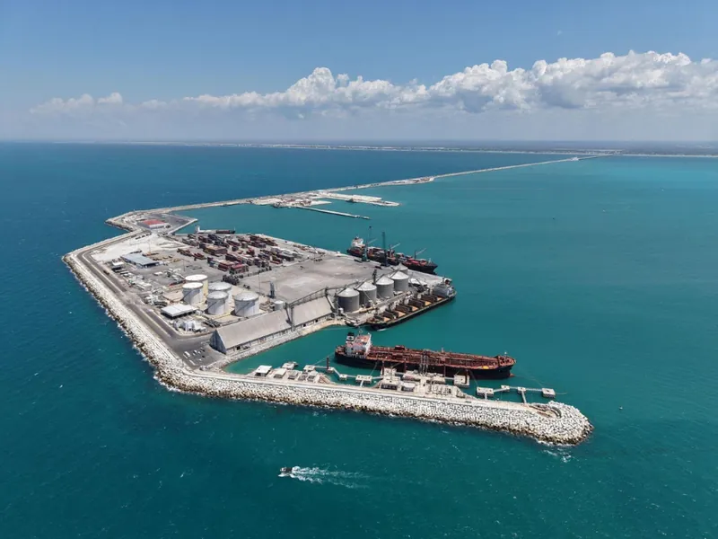
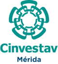
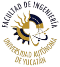
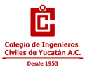
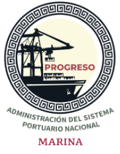
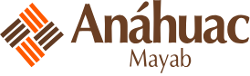
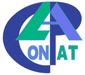

01
Daños y durabilidad
Evaluación del deterioro y desempeño de las estructuras.
Obras de concreto: daños, resiliencia, sustentabilidad y economía circular.
Instituciones participantes
Más de 15 especialistas nacionales e internacionales conforman el programa de las XVII Jornadas Internacionales del Concreto Armado, entre conferencistas magistrales, conferencistas invitados y participantes en paneles de expertos.
Representantes de reconocidas instituciones académicas y organizaciones del sector compartirán sus conocimientos y experiencias sobre tecnologías sustentables del cemento, experimentación y modelación estructural, restauración y protección de construcciones históricas, durabilidad y protección del concreto, entre otros temas de interés para la industria y la investigación.
Seis ejes que recorren el ciclo de vida de una estructura: desde su diseño y comportamiento hasta su protección, su reciclaje y su valor patrimonial.
Evaluación del deterioro y desempeño de las estructuras.
Estrategias para prevenir daños y prolongar la vida útil.
Nuevos materiales, cementos verdes y tecnologías emergentes.
Valorización de residuos y aprovechamiento de recursos.
Del estudio del comportamiento estructural a las recomendaciones de diseño.
Restauración y protección de construcciones históricas.
Consulta las actividades organizadas por día y sede.
Código de vestimenta: caballeros, guayabera blanca de manga larga; damas, vestido de cóctel (se recomienda vestimenta regional).
Dr. José Manuel Mendoza Rangel · Facultad de Ingeniería Civil de la UANL · Presidente de Alconpat Internacional.
M. C. Jordy José Alvarado Pacheco · Instituto Tecnológico Superior de Progreso (ITSP).
Dr. Norberto Domínguez Ramírez · SEPI-ESIAZ-IPN.
Mario Baggio · Alchemco, EE. UU.
Colegio de Ingenieros Civiles de Yucatán A.C.
Dr. Enio José Pazini Figueiredo · Universidad Federal de Goiás, Goiânia, Brasil · Presidente de Honor de Alconpat Internacional.
Mario Baggio · CEO y Presidente de Alchemco, EE. UU.
Arq. Luis Jesús Ojeda Godoy · Coordinador de Monumentos Históricos del Centro INAH Yucatán.
Antrop. Carlos Cámara Gutiérrez · Diario de Yucatán, Mérida, Yucatán.
Colegio de Ingenieros Civiles de Yucatán A.C.
Universidad Anáhuac Mayab
Entrada a pie de playa y trámites de ingreso al edificio de la Terminal Intermedia.
Conferencia: «Pasado, presente y futuro del Puerto de Altura»
Almirante Jorge Tobilla · Director General de la ASIPONA
Presentación del antiguo viaducto: «85 años del muelle de Progreso»
Dr. Pedro Castro Borges · Cinvestav Mérida
Visita al Puerto de Altura.
Conferencia: «Pasado, presente y futuro del Puerto de Altura»
Almirante Jorge Tobilla · Director General de la ASIPONA
Presentación del antiguo viaducto: «85 años del muelle de Progreso»
Dr. Pedro Castro Borges · Cinvestav Mérida
Visita al Puerto de Altura.
Horarios en tiempo local de Mérida (UTC−6). Durante el evento, la actividad en curso se resalta automáticamente.
Guardar fechasMás de 15 especialistas de instituciones académicas y organizaciones del sector, de México, Brasil y Estados Unidos.
Facultad de Ingeniería Civil de la UANL · Presidente de Alconpat Internacional
Martes 17 · 10:30«Economía circular… ¿estaremos cerca?»
Universidad Federal de Goiás, Brasil · Presidente de Honor de Alconpat Internacional
Miércoles 18 · 09:30«Proyecto para la durabilidad de estructuras de concreto sostenibles»
CEO y Presidente de Alchemco, EE. UU.
Miércoles 18 · 10:30«Impermeabilización enzimática y vida útil de estructuras de concreto»
Martes 17 · 12:00 · FIUADY
Coordina: Dra. Montserrat Soria Castro · Cinvestav Mérida
«El futuro del concreto sostenible: aprovechamiento de fibras naturales y caracterización de nuevos materiales»
M. C. Jordy José Alvarado Pacheco · Instituto Tecnológico Superior de Progreso (ITSP)
Martes 17 · 15:00 · FIUADY
Coordina: Dr. Luis Enrique Fernández Baqueiro · FIUADY
«Aproximación al Diseño Basado en Resiliencia (DBR) en estructuras de concreto reforzado a través de la simulación numérica del daño»
Dr. Norberto Domínguez Ramírez · SEPI-ESIAZ-IPN
Miércoles 18 · 12:00 · Cinvestav
Coordina: Dr. Jorge Alberto Briceño Mena · Secihti / Cinvestav Mérida
Presentación de la obra «100 Obras de arte sacro de la Península de Yucatán»
Arq. Luis Jesús Ojeda Godoy · Centro INAH Yucatán · Antrop. Carlos Cámara Gutiérrez · Diario de Yucatán
Director General de la ASIPONA Progreso
Jueves 19 · 10:00 y 11:00«Pasado, presente y futuro del Puerto de Altura»
Cinvestav Mérida
Jueves 19 · 10:00 y 11:00Presentación del antiguo viaducto: «85 años del muelle de Progreso»
Las semblanzas y fotografías se incorporarán una vez que sean proporcionadas y autorizadas.
Del aula universitaria al puerto: las Jornadas recorren cuatro espacios clave para la ingeniería y la investigación en Yucatán.

17 NOVMéridaMartes 17 de noviembre · Aula Magna · Toma de protesta de la Directiva de la SEFI, inauguración, conferencia magistral y paneles de expertos 1 y 2.
Av. Industrias no contaminantes por anillo periférico S/N, Cordemex, C.P. 97203, Mérida, Yucatán.
Ver en mapa
18 NOVMéridaMiércoles 18 de noviembre · Auditorio Alonso Fernández, Edificio A · Conferencias magistrales y panel de expertos 3.
Km. 6 Antigua Carretera a Progreso, Col. Cordemex, C.P. 97310, Mérida, Yucatán.
Ver en mapa
17–18 NOVMéridaMartes 17 y miércoles 18 · Actividades para socios del Colegio: martes técnico «Las enzimas en la construcción» (martes, 19:00) y curso sobre degradación, diagnóstico de patologías e impermeabilización del concreto (miércoles, 17:00).
Calle 21 No. 310-D por 50 y 52, Col. Roma, C.P. 97218, Mérida, Yucatán.
Ver en mapa
19 NOVProgresoJueves 19 de noviembre · Visita técnica y exposición técnico-científica.
ASIPONA Progreso · Viaducto al Muelle Fiscal Km. 2, Progreso, Yucatán. Punto de reunión: Universidad Anáhuac Mayab a las 08:30 (salida puntual a las 09:00; retorno de 13:00 a 14:00).
Ver en mapaInvestigadores, académicos y líderes del sector que organizan y respaldan las XVII Jornadas Internacionales del Concreto Armado.
Cinvestav Mérida
Presidente de las XVII JICACinvestav Mérida
Cinvestav Mérida
Cinvestav Mérida
FIUADY
ALCONPAT Internacional
Cinvestav Mérida
Universidad Anáhuac Mayab
Cinvestav Mérida
Presidente de la Sociedad de Exalumnos de la FIUADY
Presidente fundador de la Sociedad de Exalumnos de la FIUADY
Presidente del Colegio de Ingenieros Civiles de Yucatán
Director de Cinvestav Mérida
Director de la Facultad de Ingeniería de la UADY
CEO de Alchemco, Estados Unidos
Presidente de Honor de ALCONPAT Internacional, Brasil
Director General de SADASI
Presidente de ALCONPAT Internacional
La entrada es gratuita y el evento será en modalidad híbrida. Las actividades de la tarde tienen cupo limitado. Regístrate para asegurar tu lugar y aparta las fechas en tu calendario.
Las XVII Jornadas Internacionales del Concreto Armado son posibles gracias a la colaboración entre la academia, los colegios profesionales y la industria.





